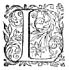
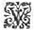

LE
DEUXIESME
LIVRE DE
LA
TROISIESME
TROISIEME
PARTIE
de l'ASTREE
de Messire Honoré d'Urfé.
Éd.
Éd. de 1619, 25 verso.

LE Temple de la bonne Deesse, où presidoit la Venerable Chrysante, estoit au pied d'une agreable coline, qu'un bras de la belle riviere de Lignon lavoit d'un costé de ses claires ondes, et de l'autre s'eslevoit un boccage sacré au grand ThautatesTautates. Dans ce Temple somptueux que les Romains avoient dedié à Vesta, et à la Bonne Deesse, servoient les Vierges Vestales, selon les coustumes des Romains : La premiere d'entr'elles se nommoit Maxime, et les Vierges DruidesDruydes
faisoient leurs sacrifices selon la Religion des Gaulois dans le boccage sacré. La venerable Chrysante leur commandoit à toutes, quoy qu'elle fust Gauloise et de l'ordre des Druydes. D'autantDautant que quand les Romains, sous pretexte de vouloir secourir les Heduoys, qu'ils nommoient leurs amis et confederez, se saisirentη
des Gaules, et là les soubmirentla sousmirent
η
à leur republique, l'une des principales marques de leur victoire fut de faire adorer leurs Dieux par tous les endroits de leur usurpationη
, ne leur semblant pas d'en estre entierement possesseurs, s'ils n'y rendoient leurs Dieux interessez, et obligez de la leurη
conserver : Et toutefois pour ne se monstrer au commencement trop insupportables, ils permirent aux Gaulois, qui n'adoroient qu'un Dieu, soubssous
les noms de Thautates, Hesus, Tharamis, et Bellenus, de conserver leurs anciennes coustumes, et de vivre en leur premiere Religion, pourveu qu'ils souffrissent aussi la leur, sçachant bien qu'il n'y a rien qui soit plus
" difficile aux hommes que d'estre tyrannisez en
" leur croyance. Et pour cetteceste cause, quand ils
" entrerent dans les Estats des Segusiens (outre la consideration de la Deesse Diane, à qui ils pensoient que cetteceste contree appartint) ils ne voulurent y changer aucune des coustumes, ny pour la police des mœurs, ny du gouvernement, ny de la Religion : Mais quand ils trouverent en ce boccage sacré un Autel dedié à la Vierge, qui enfanteroitη
, à l'imitation de celuy des sages Carnutes, et dessus la figure d'une Vierge qui tenoit un enfant entre ses bras, et que la divinité qui y
estoit adoree estoit servie par des filles DruidesDruydes, ils y eurent beaucoup plus de respect, estimant que ce lieu estoit consacré soubs autre nom, ou à la Bonne Deesse (au service de laquelle les hommes ne pouvoient assister) ou à la Deesse
Vesta, sur le Temple de laquelle ils avoient accoustumé de mettre la statuëη
d'une Viergeη
avec un enfant entre ses bras. En cetteceste opinion, pour ne diminuer en rien l'honneur et le service qui estoit renduη
à l'une de ces deux Deesses, qu'ils avoient en tres-grande reverence, ils y bastirent un temple à toutes deux, avec deux Autels égaux : Et en l'honneur de la bonne DeesseBonne Deesse l'appellerent Bon-Lieu, et en celuy de Vesta y mirent des Vestales. Et parce qu'ils estoient infiniment religieuxη
envers les Dieux qu'ils adoroient, ne sçachant si ces Deesses vouloient estre servies à la façon des Romains ou des Gaulois, et aussi pour contenter les habitans de la contree, ils y laisserent les Vierges DruidesDruydes en leurs anciennes coustumes et ceremonies, ausquelles comme à celles qui estoient les premieres, ils donnerent toute authorité en ce qui estoit des mœurs et de la conduite de l'œconomie ; et par ainsi la venerable Chrysante estoit maistresse absoluë et des Vierges DruidesDruydes, et des Vestales.
Ce Temple estoit grand, et plus spacieux encores qu'on n'eust jugé en le voyantà sa grandeur , parce qu'il estoit de forme ronde, ayant sa couverture de plomb ; sur le milieu et plus haut de laquelle s'eslevoitélevoit la statuë d'une Viergeη
tenant un enfant entre ses bras. Dans le milieu du Temple estoient posez les deux Autels avec une si juste
distance, que l'un n'estoit point plus esloigné du milieu que l'autre. Aux costez de chacun, il y avoit un petit Arc de marbre blanc, soustenu de trois colonnes, sur lesquels on mettoit les premicesprimices,
et les fruicts avant que de les offrir. A la porte il y avoit un vazevase
η
où ils tenoient l'eau qu'ils nommoient Lustrale, en laquelle la torche qui servoit à l'Autel, quand ils avoient celebré les choses divines, avoit esté premierement esteinte.
Lors que cetteceste troupe fustfut rencontree par la venerable Chrysante, il estoit encore si matin, que les sacrifices journaliers n'estoient pas commencez : ce qui fut cause qu'apres les premieres salutations elle y convia ces belles Bergeres, disant aux Bergers, qu'elle estoit bien marrie de leur oster cetteceste agreable compagnie, *mais qu'elle y estoit contrainte par l'ordonnance de la Deesse, qui vouloit que les hommes fussent bannis de ses Autels.
Paris,
Calydon
et
SylvandreSilvandre
qui y avoient le plus d'interestη
, respondirent qu'ils estoient
bien en colere contre le peu de merite des hommes, puis qu'il estoit cause que leurs Deesses ne les avoient pas jugez dignes d'assister à leurs sacrifices, qu'ils ne laisseroient
cependant de les supplier de se contenter de leur faire ce mal, et qu'elles ne missent de mesme dans les cœurs de leurs Bergeres une semblable haine contre les hommes. A quoy la venerable
Chrysante
respondit, que ces sages Deesses n'avoient pas banny les hommes par la
haine de leurs Autels, mais pour quelques bons respects, et peut-estre pour rendre
leurs Vestales plus attentives à leurs mysteres, n'en estant point distraites par la veuë des personnes de qui les perfections les pourroient faire penser ailleurs. Hylas qui n'avoit guere de devotion aux Dieux de son payspaïs , et par consequent beaucoup moins à ceux qui luy estoient estrangers, prenant la parole pour
Paris et pour SylvandreSilvandre, luy respondit : - Si ces Deesses ne nous veulent point de mal, je m'en remets à ce que vous en dites : mais si m'advoüerez
avoüerez vous, Madame, que nous avons occasion de nous plaindre d'elles, et qu'il nous est bien permis de desirer que s'il ne leur plaist de changer d'advis, on ne leur fasse plusfist point de sacrifice en ces contrées, ou pour le moins qu'il soitfust defendu aux Belles, qui se trouveronttrouveroient en la compagnie d'de
Hylas, d'y aller, pour quelque occasion que ce soitfust .
- Berger, dit la venerable
Chrysante,
Dieu
n'exauce que les souhaits qui sont justes, et qui sont faits avec une bonne intention. A ce mot, elle se retira dans le Temple, parce qu'une Vestale estoit venuë sur le sueil de la porte crier, selon leur coustume, pour la troisiesme fois :
Loing d'icyη
, loing profanes.
Cela fut cause que Hylas ne put luy respondre, comme il eust bien desiré : car aussi-tost qu'elle futfust entree, les portes furent fermées, de sorte que Paris, et tous ces Bergers furent contraints de lesl' aller attendre dans le boccage sacré, où le DruideDruyde devoit faire le sacrifice, quand celuy de Vesta seroit achevé.
Ces Vierges Vestales estoient vestuës de robbesrobes blanches, presque carrées, et si longues par le derriere, qu'elles les pouvoient jetter sur leurs testes pour se voiler, quand elles entroient dans le Temple pour sacrifier. Ce jour estoit dedié à Vesta : car pour n'estre surchargées de trop de sacrifices, les jours estoient separez, ou l'on sacrifioit à Vesta, ou à la bonne Deesse. Or celuy-cy estant pour Vesta, aussi-tost que le Temple futfust fermé, et que toutes les Vierges Vestales et Druides, et les Bergeres eurent pris leurs places, elles se prosternerent en terre au premier coup que la Vestale Maxime donna d'un livre sur un banc, quiη se levant et prenant un rameau de laurier qu'une jeune Vestale luy presenta, et qui estoit moüillé dans l'eau qu'ils appelloient LustralleLustrale qu'elle luy portoit apres dans un vazevase d'argent, elle s'en jetta un peu dessus, et puis en fit de mesme sur toute la compagnie, qui prosternée recevoit cetteceste eau avec grande devotion. Apres, s'estans toutes relevées, et elle retournée en son siege, une autre jeune Vierge luy presenta une corbeille pleine de chapeaux de fleurs, elle en mit un sur sa teste, et en feit de mesme à six autres qui se vindrent mettre à genoux à ses pieds, et qui estoient celles qui devoient servir au sacrifice : l'une incontinent alla prendre le Simpulle, petit vase, avec lequel elles souloient sacrifier : l'autre prit le coffre des parfums qui se nommoit Acerta :Accerta la troisiesme porta le gasteau de fromant nommé Mole-salee, qui estoit couronné de fleurs : l'autre portoit l'eau qui devoit servir au sacrifice ; car en ceux de
Vesta on n'y usoit point de vin : Et en celuy-là mesme de la Bonne
bonne Deesse on ne le nommoit pas vin, mais laictη
: la cinquiesme portoit le faisseau de Verveine :η
et la derniere un panier de fleurs et de fruicts. Estans toutes devant elle, elle s'achemina jusqu'jusques au pres de l'Autel de Vesta, au devant duquel elle se prosterna, et ayant quelque temps demeuré à genoux, elle commença un hymne en la loüange de la Deesse, que toutes les Vestales qui estoient dans le Temple continuerent : et ayant chanté le premier couplet, elles se leverent toutes, ayant chacunechacun
un flambeau en la main, et marchant deux à deux : les plus jeunes passerent les premieres, et les anciennes apres, et puis les six qui portoient les chappeauxchapeaux de fleurs, et en fin la Maxime avec son baston pastoral, et allerent trois toursa trois a l'entour de l'Autel, commençant à main gauche, à la fin desquels chacune se remit en sa place, horsmis la Maxime et celles qui estoient chargees des choses necessaires pour le sacrifice : car celle qui portoit le faisseau de Verveine le posa à main gauche sur l'Autel, où le feu estoit tousjours allumé et gardé nuict et jour par deux Vestales, parce que quand il s'estaignoit, elles croyoient qu'il leur devoit arriver quelque grand desastre, et la Vestale qui estoit en garde estoit rudement chastieeη
par le Pontife : et puis on le r'allumoitr'alumoit , non à d'autres feux materiels, mais aux rayons du Soleil, qui ramassez en des vases de verre, faisoient pour éprandre ce feu qu'ils nommoient sacré. L'autre Vestale qui portoit les fleurs et les fruicts, les posa sur l'arc de marbre, dont nous avons parléη
:
Et les autres quatre demeurerent debout devant la Maxime, qui alors se prosternant devant l'Autel s'accusa à haute voix de ses fautes, puis advoüa qu'elle n'oseroit approcher le sainct Autel de la Deesse, se sentant soüillée de trop de vices, et trop indigne de luy offrir chose qui luy fust agreable, si ce n'estoit par son commandement. Et puis s'en approchant encor d'avantage, elle baisa et encença l'Autel de tous costez, et enfinpuis laissant l'encensoir au pied, y mit quantité d'encens et de parfums, dont l'odeur remplissoit tout le Temple : Et lorsapres prenant la Mole-salée et couronnée de fleurs, et la tenant d'une main fort eslevée, de l'autre elle prit le coingcoin η de l'Autel, et puis se tournant du costé de l'Orient, elle profera à haute voix et lentement les paroles qu'une Vestale luy disoit mot à mot, qu'elle lisoit dans un livre, de peur d'y faillir, ou de les mal prononcer : car lors que cela arrivoit, elles croyoient que les sacrifices n'estoient pas agreables à la Deesse, et les falloit recommancer. Les paroles estoient telles :
O redoutable Deesse, fille de la grande Rhee, et du puissant Saturne, qui nourris et eslevas Jupiter en ton giron, lors que sa mere le tenoit cachéη
: Vesta que les Thirreniens appellent LABITH
HORCHIAη
, et qui es la premiere et la derniere engendree de toy, reçoy ceste devote
immolation que nous faisons pour le peuple et Senat Romain, pour la conservation des Gaulois, et pour la grandeur et *prosperitéauthorité
d'Amasis nostre Dame souveraineη
. Et nous fay la grace que ton feu qui est en nostre garde, ne s'esteigne jamais, et que la requeste qu'apres la victoire obtenüe sur les Titans tu fis au grand Jupiter, d'estre tousjours Vierge, ait aussi bien esté obtenuë pour nous que
pour toy, puis qu'estant toutes à toy, nous pouvons aussi avec raison estre estimeessommes une partie de toy mesme.
Aux dernieres paroles de cestte supplication, tout le chœur des Vierges respondit, - Qu'il soit ainsiη . Et lors elle posa la Mole-salee sur l'Autel, puis le panier de fleurs et de fruicts que la Vestale qui en avoit la charge luy presenta, et de tout ensemble en mit un peu dedans le feu qui estoit alumé pour le sacrifice, avec force encens et drogues aromatiques : Et puis prenant de l'eau dans le vase dit Simpulle, en tasta un peu, et en arrosa la Mole-salee, les fleurs, les fruicts et le feu. Toutes ces choses achevées, se reculant un peu de l'Autel, elle commença un hymne à la loüange de la Deesse, que toutes les Vestales continuerent, à la fin duquel il y en euteust
une qui estoitquestion
vis à vis de la Maxime, qui se tournant vers les autres, dit à haute voix, - Il est permis de s'en aller : Qui estoit signe que le sacrifice estoit achevé.
Lors la venerable
Chrysante, qui sans se mesler en ses sacrifices, ny les Vierges Druydes aussi, y avoit seulement assisté pour le respect qu'elle portoit à l'authorité Romaine, sortit du Temple et avec toute sa *suittecharge ,
horsmis les Vestales, qui se retirerent en leurs demeures, s'en alla au boccage sacré, où les Vacies et Bergers l'attendoient, les uns pour le sacrifice : mais les autres, autant pour la devotion qu'ils portoient à leurs Bergeres, qu'à leur grand
Thautates.
Hylas impatient en apparence plus que tous les autres, pour le desir qui le pressoit de voir bien tost sa tant aimee
Alexis, fut contraint pour ne perdre point ceste bonne compagnie, d'assister au sacrifice du Vacie : mais sa plus ardente oraison fut, que Thautates se contentast des plus courtes ceremonies pour ceste fois, à fin que tant plustost on prist le chemin qu'il desiroit ; Et d'effect à peine le dernier mot du sacrifice fut prononcé, qu'il se leva, et contraignit toute la trouppe d'en faire de mesme. Mais sa haste ne fut pas moindre lors que le disner
fustfut achevé : car voyant que la venerable
Chrysante se remettoit sur le discours, - Madame, luy dit-il, en l'interrompant, si vous ne donnez ordre à nostre depart, une partie de cette trouppe a fait dessein de vous aller attendre auprés de la belle Alexis. Philis prenant la parole pour la venerable
Chrysante ; - Et quelle mauvaise humeur, dit-elle, est la vostre, Hylas, de vous fascher en ce lieu ? Et où esperez-vous de trouver une meilleure compagnie ? - Ma feu maistresse, respondit-il, si je vous aimois comme j'aime Alexis, et que vous ne fussiez point icy, je dirois pour respondre à vostre demande, que la meilleure compagnie pour moy seroit où vous seriez : Mais parce que cela n'est pas, je vous diray pour la mesme raison, que la meilleure compagnie pour moy est aupres d'Alexis ; et pour vous rendre preuveη que je dis vray, si vous ne partez à ceste heure mesme, il n'y a plus d'de Hylas pour vous aujourd'huy. A ce mot, faisant une grande reverence, il se preparoit de s'en aller, lors que toute la troupppe accourant autour de luy, essaya de l'arrester a moitié par force : Et cependant qu'il se debattoit pour s'eschapper de leurs mains, ils virent entrer un homme que la venerable Chrysante recogneust incontinent pour estre de la maison d'Amasis, qui la vint advertir de sa part, que sa maistresse venoit coucher chez elle, pour faire le lendemain un sacrifice aux Dieux infernauxη , à cause de quelque fascheux songe qu'elle avoit fait. Ce messagermessage fut cause qu'que Hylas pressa encore d'avantage, voyant que la venerable Chrysante ne pouvoit estre de la partie, et son importunité fut telle, que ces belles bergeres furent forcees de partir plustost qu'elles n'eussent fait, quoy que le desir d'Astrée fustfut assez grand pour la convier de se haster : mais sa discretion luy faisoit dissimuler, ce que la franchise d'de Hylas ne luy permettoit pas de pouvoir
faire. Ayant donc pris congé, elles se mirent en chemin, accompagnees de ces gentils bergers : et parce que quelquefois les sentiers estoient estroits, chacun prit à conduire celle qui luy estoit la plus agreable, horsmis Silvandre, qui par respect avoit esté contraint de quitter
Diane à
ParisPâris ; et d'autant que Phllis avoit esté prieeη
de Diane de ne la point laisser seule aupres de luyPâris, de crainte qu'il ne revint aux mesmes discours de son affection, que quelques jours auparavant il luy avoit tenus, toutes les fois que le chemin le pouvoit permettre, Philis prenoit Diane de l'autre bras, et mesloit le plus qu'elle pouvoit ses discours parmy les leurs, feignant de le faire sans dessein.
Il advint qu'estant sorty du bois, et ayans
passé Lygnon, sur le pont de la Bouteresse, le chemin s'eslargit de sorte qu'ils pouvoient aller plusieurs de front : ce qui donna commodité à
Philis d'appeller encore Lycidas
aupresauprez d'elle, et voyant que SilvandreSylvandre estoit pour lors contraint d'entretenir Hylas ; - Et bien Sylvandre (luy dit-elle fort haut, afin d'interrompre plus honnestement
Paris) à vostre advis, qui a rencontré meilleure place de nous deux ?
- Je crois, respondit le Berger, que celle que j'ay dés long-temps est la meilleure.
- Vous auriez, dit Philis, de fortes raisons, si vous me faisiez avoüer ce que vous dites, et vous auriez
" fort peu d'affection si vous le croyez ainsi.
- La verité, respondit
" froidement Silvandre, ne laisse d'estre vraye,
" encore qu'on ne la croye pas, si bien que quelque
" jugement que vous fassiez, ou de la place
que je tiens, ou de l'affection que je porte à
Diane, il ne peut les changer ny rendre autres qu'elles sont : car il n'est pas plus vray que Philis est Philis, que la place que je tiens est meilleure que la vostre.
- J'ay tousjours oüy dire, adjousta Philis, que plus on est pres de la personne aymee, "
et plus l'Amant se contente. - Vous avez, repliqua "
le berger, ouy dire verité.
- ToutesfoisToutefois , continua
Philis, me voicy pres de Diane, et il me semble que vous en estes fort esloigné.
- J'en suis encor plus pres que vous, respondit-il, car si vous estes à son costé, je suis en son cœur.
- Je ne te plains donc plus, interrompit Hylas, de la peine que je pensois que tu eusses de marcher : car à ce conte, il ne tiendra qu'à
Diane que tu ne fasses de longs voyages sans guere travailler tes jambes : Silvandre sousrit de cette response, et puis respondit froidement. - Je sçay bien
Hylas, que tu n'entens pas ce que je dis ; aussi n'estoit-ce pas à toy à qui je parlois, mais à
Philis, qui à la verité est bien autant ignorante des mysteres d'Amour, mais qui toutesfoistoutefois a si bonne volonté de les apprendre, qu'elle merite mieux que toy de les ouyr.
- Voicy, dictdit
Hylas, une loüange qui n'est pas à desdaignercommune
pour Philis, disant qu'elle desire d'apprendre les mysteresη
d'Amour : que s'il est ainsi, et qu'elle vueille estudier en mon escole, je les luy apprendray à bon marché. Tous les bergers se mirent à rire des paroles d'de
Hylas, et parce que
Silvandre
prit garde qu'Astree
et
Diane
baissoient les yeux, il voulut changer de discours, et pour cepource, il luy dictdit : - Je voy bien,
Hylas, que tu enseignes ta doctrine
fort librement : mais pour revenir à ce que j'ay dit à
Philis, je te repliqueray encores C'est que je suis plus prés de Diane, qu'elle n'est pas, encor qu'elle soit à ses costez, parce que Diane est en mon cœur.
- Vous avez dictdit , reprit incontinantincontinent
Philis, que vous estiez en son cœur.
- Et je l'avoüe encores, respondit Sylvandre.
- Si est-ce, adjousta Philis, qu'il y a bien de la difference, et mesme selon ce que je vous en ay ouy dire autresfoisautrefois
η
: car j'entendrois que vous aymez Diane, si on me disoit qu'elle fust en vostre cœur ; et qu'elle vous ayme, si vous estiez
*l'on disoit que vous fussiez
dans le sien.
- A parler, dit Silvandre avec le commun, on l'entend comme vous le dites : mais quand on discourt avec les personnes un peu mieux entendües, l'un signifie l'autre. Et en voicy la raison. Estre en quelque lieu s'entend de deux sortes, l'une, quand le corps occupe une place, et lors la surface de la chose contenuë est le lieu ; l'autre c'est quand l'ame, qui est toute spirituelle, agit en quelque lieu : Car rien ne pouvant agir immediatement en quelque lieu qu'il n'y soit, il s'ensuit que si mon ame agit de cette sorte dans le cœur de Diane, qu'elle y est. Or si comme,
" nous avons ditη
autresfoisautrefois
η
, l'ame vit mieux où
" elle aimeayme , quequ' où elle anime, puis que
le vivre est une action immediate de l'ame, il s'ensuit que si j'ayme Diane, je suis veritablement en elle.
- Cela respondit Philis, est un peu bien
obscur pour moy, toutefois encore ne preuveriez vous par là, sinon que vostre ame y est, et non pas
SilvandreSylvandre, et par ainsi ma place est encore la meilleure, puis que pour le moins une partie de
moy, et celle que j'ay ouy dire estre la plus fertile en passions, qui est le corpsη
, est plus prés que vous n'estes pas.
- J'avoüe, respondit-il, que du corps vous en estes plus pres que moy : mais il ne faut pas conclure pour cela que vostre place soit la meilleure, parce que l'ame est de telle sorte superieure au corps, qu'au prix d'elle il n'est de nulle consideration, tant s'en faut qu'il puisse tenir quelque rang aupres d'elle.
- Pleust à DIEU, Berger, dit
Hylas, que nous fussions tous deux amoureux d'une mesme bergere ; car puis que tu mesprises si fort le corps, je le prendrois fort librement pour moy, et je te laisserois volontiers l'esprit, quand mesme ce seroit celuy du plus sçavant de nos DruidesDruydes : Et pour te monstrer que je te dy vray, laisse moy le corps d'Alexis, et je te laisse l'esprit d'Adamas, qui est un si sçavant homme. Chacun se mit à rire du party que l'inconstant presentoit à
SilvandreSylvandre, et cela l'empescha de luy respondre si tost : mais peu apres il pristprit la parole de cestecette sorte :
- Si chaque chose estoit prisee selon son merite, il est certain que le choix que tu fais n'est pas le meilleur, parce que le corps que tu veux seulement aimer, n'est pas un objectobjet digne d'estre aymé de l'ame, d'autant que l'amour doit tousjours
adjouster quelque perfection a l'Amant,
comme "
chacun avoüe, quand on dit, que l'amour est "
desir d'un bien qui defaut
η
. Et par cette ordonnance "
l'Amant seroit obligé d'aimer tousjours quelque chose de plus qu'il ne seroit pas : Mais concedons à ces esprits qui *
sont tant abaissez, qu'ils
ne font que trainer par terre, sans se pouvoir relever
à ce qui est par dessus eux, qu'ils puissent aimer ce qui leur est égal : Je m'asseure qu'il n'y a personne qui pour le moins ne confesse, qu'il est honteux de s'abaisserabbaisser à l'amitié de ce qui est moins que nous ne sommesqu'ils ne sont pas . Que si cela est vray, comment pourrait-on estimer le corps digne d'estre aimé de l'ame, puis qu'il est si vil et abaissé par dessous elle ? Mais outre que cettecet amour est honteuse, je tiens qu'elle est impossible, ou pour le moins insensee, si nous voulons y adjouster les conditions que la vraye amour
" doit avoir : Car celuy qui aime, n'a point de plus
" violentviolant desir que d'estre aimé de la chose aimee ; mais n'est-il pas impossible que celuy qui n'aimeayme que le corps en soit aimé, d'autant que l'amour peut estre seulement en l'ame ? Et par là ne vois-tu pas,
Hylas, que ceux qui aiment le corps sont imitateurs de la folie de Pigmalion, qui devint amoureux d'un marbre ? Aussi pour monstrer que cela ne se doit point, la nature y repugne, et je m'asseure que tu l'avoüeras si l'on te le demande : car confesse la
verité,
Hylas, si Alexis estoit morte, en aimerois-tu le corps ? Et parce qu'il ne respondoit point : - Tu es muet, continua
SilvandreSylvandre, est-ce la verité qui te confond, ou la honte d'avoir eu une si mauvaise opinion ?
- Ny l'un ny l'autre, dit Hylas, mais que veux-tu que je te responde ? Penses-tu que je sois
" un devineur ? Ne sçais-tu que quand les yeux
" voyent ce qu'ils n'ont point veu, le cœur pense ce qu'il n'a point pensé ?
Je parle fort asseurement des choses passees quand il m'en souvient, et des presentes quand je les sçay : mais des futures,
Eh ! mon amy, pour qui me prends-tu ? Penses tu que ce soit moy qui aye instruict les Sybilles, ou que j'aye esté en leur escole pour apprendre à predire ? SilvandreSylvandre mon amy, si tu veux *discourirdisputer avec moy, parlons des choses dont les hommes peuvent parler, sans entrer dans les secrets des Dieux : laissonsη
leur les choses futures, puis qu'ils ont retenu cela en leur partage ; Et si tu me demandes si j'aymeaime le corps d'Alexis, je te respondray qu'oüy, et de telle sorte (quoy que tu sçaches dire de tes resveries et de ton amour de l'ame) que si elle n'avoit point de corps, je ne l'aimerois point : mais quand tu me demanderas ce que je ferois quand ce corps n'aura point d'ame, je te renvoyeray vers ceux qui sçavent predire l'avenir, et si tu veux, tu pourras aller avec eux visiter les Destinéesη
, et nous rapporter des nouvelles de leurs conseils ; Et moy, cependant que tu feras ce long voyage, je continueray d'aimer le beau corps d'Alexis, non tel qu'il sera d'icy à cent ans, mais tel qu'il est, c'est à dire l'ouvrageη
des Dieux le plus beau, et le plus parfait.
Ainsi disoit
Hylas, et SilvandreSylvandre luy vouloit respondre, lorsque suivant le chemin il fallut passer une petite planche, où chacun des Bergers s'amusa à aider à sa Bergere mieux aimée. Et lors qu'elles furent toutes de l'autre costé, et que Sylvandre voulut reprendre la parole, il en fut empesché par Diane, qui oyant une Bergere, et un Berger qui chantoient, le pria de les escouter. Toute la trouppe tourna les yeux vers le lieu d'où la voix venoit, et s'approchant peu à peu, ils virent une Bergere assise à l'ombre d'une
touffe d'arbres, et un Berger à genoux devant elle, et peu apres ils commencerent d'oüiroüyr leurs paroles un peu plus distinctement. Elles estoient telles :
ALC.

Vous verra-t'on jamais changer,
Puis que vous estes si legere ?
DAPH. Alcidon n'est pas mon Berger,
Ny Daphnide vostre Bergere :
Le Destin qui commande à tous
Ne nous fit pas naistre pour nousvous .
ALC. Jamais le Destin n'accusez
D'une chose si volontaire.
DAPH. Vous aussi ne vous abusez
De rien obtenir au contraire :
Car soit Destin, soit volonté,
En fin le sort en est jetté.
ALC. Vueillez ou ne me vueillez point,
Me donnant à vous je suis vostre.
DAPH. Si nostre vouloir ne s'y joint, "
Ce qu'on nous donne n'est pas nostre : "
Et je refuse franchement
De vous recevoir pour Amant.
ALC. Recevez moy pour serviteur,
Si vostre Amant je ne puis estre.
DAPH. Non non, je ne vous veux, Pasteur,
Ny pour serviteur, ny pour maistre :
Et si vous voulez vostre bien,
De moy n'esperez jamais rien.
ALC. Quoy que fasse vostre rigueur,
Mon feu sera tousjours extreme.
DAPH. C'est bien avoir faute de cœur
D'aymer si fort qui ne vous aymeaime :
Car un bon cœur devroit chasser "
Par le mépris un tel penser. "
ALC.
Mais pourquoy ne se changera
EnfinEn fin ce farouche courage ?
DAPH. S'il peut changer, ce ne sera
Que pour vostre desavantage :
Mais que je vous ayme, Berger,
Vous n'y devez jamais songer.
A peine la Bergere eust finy ces dernieres paroles, que cessant de chanter, et voyant que le Berger vouloit continuer, elle luy dit, - C'est assez, Alcidon : si vous voulez que je m'arreste ici plus long temps, je vous prie cessez ou changez de discours, et croyez que ceux-cy ne vous acquerront jamais rien de plus avantageux envers moy qu'un accroissement de mauvaise volonté.
- Il y a long temps, respondit le Berger, que si je n'avois non plus d'esperance en la justiceη
d'Amour qu'en la vostre, je n'aurois pas seulement cessé de parler à vous, mais aussi de vivre.
- Et quelle esperance est la vostre, dit Daphnide, puis que s'il estoit juste, ce Dieu de qui vous parlez, il y a long temps que vous serviriez d'exemple a tous ceux qui ont la hardiesse de l'outrager ?
- N'offencez point, dit Alcidon, celuy de qui la puissance ne se mesure qu'à sa volonté, et de qui le pouvoir ne vous a point tousjours esté tant incognuincogneu , que vous le deviez maintenant mespriser comme vous faites. La Bergere eust repliqué, n'eust été qu'elle vit approcher cette trouppe, qui luy donna sujet de se taire.
Astree et le reste de la compagnie, qui avoient ouy ce que ces estrangers avoient chanté, et entre'oüy une partie de ce qu'ils avoient dictdit plus bas, conviez de la beauté de la Bergere, et de la bonne mine et gentille
disposition du Berger, tant pour satisfaire à leur curiosité, qu'au devoir, auquel les loix de l'hospitalitéη
, religieusement observees en cette contree, les obligeoient, s'addresserentadresserent à la Bergere, et apres l'avoir saluée, luy offrirent et à toute sa trouppe toute
sorte d'assistance : car en mesme temps s'approcherent d'elle deux autres Bergeres et un Berger, qui s'estoient escartez entre quelques arbres, attendant que la chaleur fustfut un peu abatueabbatue . Daphnide voyant cette belle troupetrouppe s'offrir à elle avec tant des paroles si pleines de courtoisie, luyleur respondit avec toute la civilité quiqu'il luy fut possible, et puis leur dit en continuant general à toutes. - Je ne m'estonne plus si le Ciel favorise de ses graces cette contreeη plus avantageusement que toutes les autres, puis qu'elle est habitée par des personnes si pleines de courtoisie et accomplies de toute sorte de merite. Astrée prenant la parole luy respondit : - Il n'y a personne icy qui ne soit fort disposée à vous faire service, tant pour satisfaire à nos Ordonnances, qui nous commandent de rendre toute assistance aux estrangers, que pour avoir la gloire de servir des personnes qui le meritent comme vous, et vostre compagnie. - Je commence, respondit l'estrangere, à bien esperer de la fin de mon voyage, puis que ma premiere rencontre a esté si bonne. Et puis que les offres que vous me faites me doivent donner la hardiesse de m'enquerir de ce qui m'est necessaire de sçavoir ; Je vous supplie donc, belle Bergere, de me dire s'il y a une fontaine en cette contrée qui s'appelle De la verité d'Amourη , et où elle est. Astree tournant l'œil surη Paris, et sur SilvandreSylvandre, comme leur en demandant des nouvelles, demeura sans parler. Qui fut cause que Sylvandre prit la parole, et luy dit, - Belle Bergere, la fontaineη que vous demandez est veritablement en cette contree : mais Amour est cause qu'il vaudroit autant qu'elle
n'y fustfut point, estant remise en la garde de quelques animaux enchantez, qui en defendentdeffendent l'accés. - Et où est-elle ? reprit Astree. - Comment, dit l'Estrangere, vous estes de ce pays, et vous ignorez où est une chose si rare ? cela est presque incroyable, et mesme à ceux qui verront vostre visage, qui estant si beau, ne peut pas avoir esté veu sans amour, ny vous par consequent, sans curiositéη de sçavoir la verité de l'affection de ceux qui vous aymentaiment , qui à ce que j'ay oüy dire, se voit en cette fontaineη . - Je sçay bien, dit Astree en rougissant un peu, que vostre courtoisie vous fait parler de mon visage si avantageusement, vous semblant d'estre obligee pour les offres que je viens de vous faire, de me gratifier de cetteceste sorte : et c'est pourquoy je ne vous respondray point à cela : mais quant à la curiosité que vous croyez qui doive estre en moy, outre que l'occasion n'y est point, parce que je n'ay jamais eu assez de bon-heur pour estre aymeeaimée de cette façon, encores avons nous une coustume parmy nous, que jamais nous ne recourons à la fontaineη dont vous parlez, pour cognoistre la volonté de ceux qui nous servent, ayant un moyen beaucoup meilleur, et plus asseuré. - Et quel est-il ? dit incontinantincontinent l'Estrangere, afin que l'un me deffaillant, je puisse recourre à l'autre ? - C'est, respondit Astree, le tempsη et les effetseffects. - Encore, dit Daphnide, que chacun le die comme vous, si tiens-je cette cognoissance bien incertaine, et certes je le puis dire, comme y ayant esté trompee. - Si cela nous estoit avenu, reprit Diane, nous y userions d'un autre remede. - Et quel est-il ? dictdit
l'estrangere.
- C'est de ne plus rien aimeraymer du tout, respondit
Diane.
- Voila, dit
Alcidon, un remede bien injuste, puis qu'il punit l'innocent, et ne chastie point le coulpable : car celuy qui a trompé une Bergere en faignant de l'aimer, ne se soucie pas de n'estre point aimé d'elle, et par ainsi il ne reçoit point de chastiment de sa faute : et si de fortune elle vient à estre bien aimee de quelque autre, luy qui n'aura point offencé en portera toute la peine.
- Voila, gentil Berger, interrompit
Hylas, comme nos Bergeres sont aussi injustes, que vous
les voyez estre belles : Et si pour tout cela, nous ne pouvons nous empescher de les aymeraimer ; jugez ce que nous ferions si elles avoient l'esprit aussi doux que le visage. L'uneη
de ces bergeres oyant parler
Hylas
de cette sorte, commença à tenir les yeux arrestez sur luy, luy semblant de le cognoistre : et sans doute sans l'habitη
qui le déguisoit un peu, elle n'eust pas demeuré si long temps en cette peine : Mais enfinen fin pour ne se point méprendre, elle s'adressa à Thamire, et luy demanda assez bas, si ce Berger qui parloit
n'estoit pas
Hylas, et luy ayant respondu qu'ouy, elle revint vers
Daphnide, et s'aprochantapprochant à son oreille luy dit, - Madame, vous parlez à Hylas
sans le cognoistre. L'estrangere changeant de couleur, et se mettant une main sur le visage, comme de honte d'estre veuë de luy, revestuedéguisee de ces habits, se recula un pas ou deux, s'écriant, - Mon Dieu, Hylas, que l'habit que vous portez vous change, je ne sçay si le mien m'en fait autant. Lors Hylas s'approchant d'elle, il la considera plus attentivement, si bien que quoy qu'il y eust long temps qu'il ne l'eust veuë
et que l'habit de Bergere la changeast beaucoup, si la recognutrecogneust -il pour Daphnide, estimee la plus belle Dame qui fustfut en Arles, ou dans la Province des Romains ; dequoyde quoy il demeura si estonné, qu'il ne sçavoit s'il songeoit, ou s'il veilloit. EnfinEn fin apres estre demeuré fort long-temps à la considerer, il se retira d'un pas, et plus ravy en admiration qu'il ne se peut dire, se mit à la regarder, et à la considerer sans pouvoir proferer une seule parole ; Dequoy l'autre estrangereη s'apercevantappercevant ; - C'est sans doute, dit-elle, que voicy la contree des merveilles, puis que j'y vois des Bergeres qui surpassent les personnes plus civilisees, des beautez sans curiosité, et ce qui est de plus merveilleux, des Hylas sans parole. Hylas à ce mot tournant les yeux sur celle qui parloit, il la recogneutrecogneust pour estre Carlis, et l'autre Stiliane, et Hermante avec eux ; cette veuë le rendit si confus, que sans pouvoir parler, il courut embrasserη Hermante son cher amy, et apres l'avoir tenu quelque temps en ses bras, se separa de luy pour le reprendre par deux ou trois fois : enfinen fin reprenant la parole, - Est-ce bien, dit-il, mon cher Hermante que je vois, et que je tiens entre mes bras ? Celles que je voy icy est-il possible que ce soient les plus belles de la Province des Romains ? Et je dirois de l'Univers, si la contree où nous sommes en estoit dehors : Quoy ! je voy donc la belle, et tant admiree Daphnide, la glorieuse Stiliane, et cette Carlis, qui la premiere m'appritaprit à aymeraimer . Les Dieux m'ont faitfaict trop de grace de vous avoir conduite icy, Madame, dit-il s'addressantadressant à Daphnide,
avec vostre compagnie, croyant quant à moy, que c'est pour vous faire estre tesmoing de ma gloire, et de ma felicité.
- Hylas, respondit incontinantincontinent l'Estrangere, vous n'aurez jamais contentement, où comme vostre amie je ne participe ; mais si vous estes estonné de me voir en cet equipage, je ne le suis pas moins de vous avoir rencontré, et deguisé comme vous estes, et en un lieu où je n'avois aucune esperance de vous trouver : mais comme que ce soit, je tiendray cette rencontre pour tres-heureuse, si elle me fait participer à la gloire et a la felicité que vous possedez.
- Madame, interrompit Carlis, il n'a garde de se resjouyr si fort de ma venuë, ny de celle de Stiliane.
- Et pourquoy, ma premiere maistresse, entrez-vous en cette opinion ? dit-il :
Ne sçavez vous pas que l'on tient que les premieres "
amours ne s'effacent jamais ?
- ToutefoisToutesfois , "
dictdit -elle, vous monstrez le contraire, puis que "
l'amour ne peut pas estre quand l'oubly ostenous efface la memoire de la chose aimeeaymee ; et vous ne pouvez nier que vous ne nous ayez mescogneuës et oublieesmécogneus et oubliez .
- Je suis faitfaict , dictdit
Hylas, tout d'une autre façon que le reste de ceux qui se meslent d'aymer : car jamais je ne perds la memoire de celles que j'ay aymeesaimees , ny jamais mon affection ne s'efface : Il est bien vray que quelquefois ma memoire se couvre d'oubly, comme le brasier de cendre, et que mon affection se lasse comme l'arc qui a demeuré trop long-temps tendu : mais comme le brasier pour peu qu'il soit soufflé se descouvre vif et ardant, et l'arc, quand on le retend, est aussi fort qu'auparavant, de mesme
est-ilil est de ma memoire, et de mon affection lors que cestecette cendre de l'oubly est ostee par la veuë et par la presence, ou bien que mon amour par quelque nouvelle faveur se renforce de desir, et d'esperance.
- Je voy bien, dit
Stiliane, qu'en fin Hylas est tousjours Hylas.
- Mais, adjousta Daphnide, nous sçaurons à loisir un peu plus de vos nouvelles : cependant afin que nous ne fassions quelque erreur envers ces belles et honnestes Bergeres, dites nous, Hylas, qui elles sont, et si Astree ou Diane, ne sont point en cette compagnie.
- Madame, respondit Hylas, si vous estes venuë en cestecette contree pour ce seul sujectsubjet , vous pourrez vous en retourner quand vous voudrez, car les voila toutes deux devant vous, dictdit -il les luy monstrant. Lors
Daphnide s'avançant les salüa encores une fois, et apres
" les avoir quelque temps considerees,η
- Il est vray,
" dictdit -elle, qu'en cecy la renommeeη
est moindre que la verité, et qu'il est certain que vostre beauté surpasse ce que l'on en dit.
- Madame, respondit
Astree en rougissant, les personnes qui vivent comme nous faisons, peuvent dire qu'elles sont au monde sans y estre : car ne voyant que nos bois, et nos pasturages, à peine peut la renommee se charger seulement de nos noms, tant s'en faut qu'elle en doive raconter quelque chose, et en son silence nous pensons luy
estre infiniment favorisees : car ce nous est beaucoup de bon-heur, que ne pouvant rien dire de nous à nostre advantage, elle n'en die rien du tout.
- Vous direz ce qu'il vous plaira, reprit Daphnide, mais puis que j'ay cognoissance de vos noms,
si faut-il que la renommeeη
me l'ait donnee, estant de sorte esloignee de vos demeures, que n'ayant jamais esté icy, je ne sçauroissçauroys les avoir apris que par elle : Et je voy maintenant qu'encores qu'elle parle fort avantageusement de vous, elle est toutesfoistoutefois infiniment inferieure à la verité, et qu'en cela elle vous faict tort.
- Madame, dict Diane, vostre courtoisie est celle qui nous donne cet avantage, et quoy que nous soyons presque hors du monde, comme vous disoit ma compagne, si voudrions nous bien
estre telles qu'il vous plaist de nous figurer, parce "
que la perfection est toujours desirable en quiquoy "
que ce soit.
- Vous ne devez point, repliqua l'Estrangere, en desirer plus que vous en avez, car vostre desir outrepasseroit la puissance de la Nature, ne croyant point qu'elle puisse faire deux differentes beautez plus parfaites.
- Et que diriez-vous, Madame, interrompit Hylas, qu'encores qu'elles soient telles, je n'en ay jamais esté amoureux, ou c'est si peu que ce n'est rien ?
- Je diray, respondit Daphnide,
qu'il n'appartient pas à tous les oyseaux de se "
plaire en la pure lumiere du Soleil, ny par consequent "
à vostre mauvaise veuë en ces trop grandes beautez.
- Tout au contraire,
Madame, repliqua
Hylas : c'est parce qu'il y en a de plus belles en ceste contree qu'elles ne sont, et vous sçavez que Hylas aime sur tout la beauté.
- Je croiraycroirois
difficilement ce que vous dictesdites , respondit l'Estrangere.
-Je vous le feray avoüer, dit-il, si vous voulez venir où toute cestecette trouppe s'en va.
- Et afin, discrettes Bergeres, continua-t'il se tournant
vers Astree et Diane, que vous ne vous mescontiez, sçachez que vous voyez devant vous, sous ces habits de berger et de bergere, la plus belle Dame, et le plus gentil
Chevalier de la Province des
*Galloligures
Romains,
et que peut-estre vostre contree n'eust jamais une plus grande faveur du Ciel, que de les recevoir : C'est pourquoy, gentil
Paris, vous ne devez pas souffrir qu'ils se separent de ceste compagnie, qu'Adamas ne les ait receus en sa maison. Paris et les bergeres s'adressant à
Daphnide, s'excuserent de ne luy avoir rendu l'honneur qu'ils luy devoient, et la supplierent de sorte de vouloir faire ceste faveur au grand Druyde, qu'en fin elle y consentit, tant pour satisfaire à la priere que Paris, et ces belles bergeres luy faisoient, que pour le desir qu'elle avoit de parler au sage Adamas, sur les affaires qui la conduisoient en ce lieu, *
ayant desja fort ouy parler de sa prud'hommie
.
Le contentement
d'de
Hylas ne fut pas petit quand il vitvid ceste resolution. Et parce que Daphnide avoit fort bonne cognoissance de son humeur, et qu'elle l'avoit cogneu en l'isle de Camargues et en Arles, elle luy fit par les chemins plusieurs demandes, ausquelles les bergeres respondoient quelquefois pour luy, et quelquefois SilvandreSylvandre : Et quoy qu'il voulust se contraindre un peu devant Daphnide, Stiliane, et Carlis, si est-ce qu'il ne pouvoit s'empescher d'eschapper bien souvent en ses responces, et mesme quand SilvandreSylvandre prenoit la parole ; de quoy ces Estrangeres rioient de sorte, qu'en fin
s'adressant à Daphnide : - Je croy, luy dit-il, Madame, que prenant l'habit de ces bergeres vous en avez aussi pris l'humeur, puis que les discours de ce berger vous plaisent si fort : car il ne sçauroit ouvrir la bouche pour me contredire, qu'elles n'en rient à haut de teste. Mais Silvandre mon amy, continua-til, se tournant vers le berger, sois certain que c'est de toy que ceste belle Dame se mocquemoque , et non pas de moy, parce que n'ayant esté nourry qu'aux villages, tu ne sçais guere bien comme il faut parler à celles qui luy ressemblent : Et pourcepour ce, si tu m'en crois, tu ne continueras plus ce qui est tant à ton desavantage. - Gentil Berger, dit incontinantincontinent Daphnide, ne croyez point Hylas : vous sçavez assez quel il est, et j'aurois trop de desplaisir que vous eussiez ceste opinion de moy. - Madame, respondit SilvandreSylvandre, nous nous faisons souvent de semblables reproches Hylas et moy, et toutesfois nous ne nous croyons guere l'un l'autre : Mais Hylas, dit-il, se tournant vers luy, tu te trompes fort si tu crois que je n'aye point de cognoissance de ceste belle Dame : j'aurois en vain esté si longuement parmy les Massiliens, et il faudroit bien que j'eusse eu les oreilles bouchees, et les yeux clos, si je n'eusse oüy parler de son merite, ny veu sa beauté : Je sçay, Hylas, peut estre mieux que toy, qui est la belle Daphnide, qui Alcidon, et qui le grand et redoutable Roy Euric : peut-estre te raconterois-je plus particulierement la priseη qu'il fistfit de la ville des Massiliens, et de celle d'Arles, qu'autre qui le voulust faire : et pour-ce ne pense encor
que je sois berger, m'estonner par tes discours, n'ayant pas non plus que toy, porté tousjours la houlete et la pannetiere que tu me vois. Daphnide alors prenant la parole : - A la verité, dit-elle, Hylas, ce berger monstre qu'il ne me cognoist pas mal, et je croy aux paroles qu'il tient, qu'il en sçait plus que vous ne pensiez ; mais gentil berger, dit-elle, si ce ne vous est importunité, dites nous où vous avez apris ce que vous racontez ? - Madame, respondit SilvandreSylvandre, j'ay esté longuement dans les escolesη des Massiliens, où vostre nom a esté tant chanté des Bardes, qu'il n'y a personne qui ne l'ait oüy. - Et comment estes vous maintenant, dit-elle, en ceste contree avec cét habit de berger, et qui vous y retient ? - La Fortune, dit-il, m'y a conduit, et l'Amour m'y arresteretient . - Et moy, dit Hylas, l'Amour m'y a conduit, et Alexis m'y fait demeurerη retient . - Et qui est, dit-elle en sousriant, ceste bien-heureuse Alexis ? - C'est celle-là, continua Hylas, qui vous fera rougir de honte, et paslir d'envie, la voyant si belle, qu'il n'y a beauté qui puisse egaler la sienne. - Vous en dites beaucoup, Hylas, respondit-elle, pour n'estre pas creu, et trop pour estre creu du tout. - Que diriez vous, repliqua-t'il, si je vous en disois autant qu'il y en a, puis que n'ayant seulement que commencé d'en parler, vostre croyance est si foible ? Si vos yeux ne me servoient bien tost de tesmoins contre vous-mesme, je m'efforcerois de le vousvous le tesmoigner par mes paroles : mais je me remets à eux, et au jugement qu'ils en feront ; mesme que j'espere que ce sera si tost, que vous souvenant encores de mes paroles, vous
avoüerez en vostre ame qu'elles sont veritables, si ce n'est que vous m'accusiez de n'en avoir pas dit assez. Alcidon alors prenant la parole, - Pour l'amour de vous Hylas, dit-il, on vous avoüera que vostre maistresse est belle : mais qu'elle surpasse Daphnide, si les paroles me deffailloient pour soustenir le contraire, j'y mettrois le sang et la vie.
- Et moy, dit Hylas d'un visage fort serieux, tant qu'il ne faudra que des paroles pour soustenir ce que j'ay dit, je le maintiendray contre qui que ce soit : mais soudain qu'il faudra y employer du sang, je ne le quitteray pas seulement à vous, mais à tous autres qui voudront soustenir le contraire : car je fay professionη
de parler, et non pas de tuer ; Chacun se mit à rire, et de telle sorte qu'Alcidon ne peut luy respondre de long-temps.
Sans doute leurs discours eussent continué plus longuement, s'ils ne se fussent trouvez si pres de la maison d'Adamas, qu'ils furent contraints de se taire pour la considerer : Cependant
Alexis pour avancer d'autant le contentement qu'elle se promettoit de la veuë d'Astrée, s'estoit accoudée sur une fenestre, qui regardoit du costé de la plaine, et discouroit avec
Leonide
du prochain
contentement qu'elle attendoit. Mais lors qu'elle aperceut ceste belle et grande trouppe, s'asseurant qu'Astrée
en estoit, elle tressaillit toute, et à mesure qu'elle se venoit approchant,
elle alloit aussi discernant tantost une bergere, et tantost un berger de sa cognoissance : mais lors qu'elle recogneut
Astrée, ô Dieu que devint elleη
! Elle demeura longuement la
veuë sur elle sans dire mot, comme ne pouvant saouler ses yeux de cest agreable object ; en fin avec un grand souspir, et la monstrant du doigt à
Leonide : - La voila, dit-elle, la plus belle, et la plus aimable bergere de l'Univers, *
imitant presque en ce transport
Adraste en sa folie. Et apres s'estre teuë pour quelque temps, elle se recula un pas de la fenestre, et pliant le bras l'un enà l'autre sur l'estomac : - Mais, ô Dieu ! dit-elle, comment m'oseray-je presenter devant ses yeux, puis qu'elle m'a commandéη
le contraire ?
- Vous voicy encore, respondit Leonide, en vostre vieille erreur : n'avez vous pas assez debattudebatu
avant que venir icy, ces mesmes considerations *contreavec
Adamas ? Et avez vous desja oublié les raisons, que si prudemment il vous a rapportées ?
- Ne croyez pas, repliqua Alexis, que je les aye oubliees, mais je sçay bien aussi que comme que ce soit, Astrée me verra et je la verray ; qu'elle parlera à moy, et que je parleray à elle : et n'est-ce pas cela contrevenir à ce qu'elle m'a defendudeffendu ? Va-t'en, me dit-elle, je me souviendray toute ma vie de ces cruelles parolesη
. Va t'en desloyaldéloyal , et garde toy bien de te faire jamais voir à moy, que je ne te le commande. La Nymphe qui vit bien que si ce discours passoit plus outre, il ne pouvoit que donner beaucoup d'inquietude au Berger, pour ne le continuer d'avantage elle luy respondit. - Il ne faut plus Alexis, vous remettre devant les yeux ces considerations : la pierre en est jettee, et il n'est plus temps de demander conseil, si vous devez voir Astrée, les choses sont en tel estat, que de necessité il
faut passer plus outre : mais voicy bien l'heure que vous devez monstrer que vous estes hommeη
, et que vous venez de cest
Alcipe, de qui le courage a tant esté estiméη
de chacun. Il faut, dis-je, que changeant de visage et de façon, vous receviez Astree sans vous estonner, et qu'à son abord vous ayez tant de puissance sur vous mesme, que personne ne s'apercoive de ce que vous voulez tenir caché. Car il faut que vous sçachiez "
que les premieres impressions sont celles qui "
durent le plus long-temps, et sur lesquelles on fait "
un plus seur jugement ; et pour ce resolvez-vous "
à vous déguiser de sorte, que ceux que vostre habit abusera, ne puissent estre détrompez par vos actions.
- Ha ! Madame, dictdit
Alexis, "
que ceux qui sont sains donnent aisément conseil aux malades ?η
"
- Ne voilà pas desja une faute, reprit Leonide, pourquoy ne m'appellez vous vostre sœur, et non pas Madame ? Puis que vous sçavez bien que, comme Adamas veut que j'appelle Paris mon frere, de mesme il m'a ordonné que je vous nommasse ma sœur ; et si vous faictesfaites autrement, quel soupçon ne donnerez vous point de vous-mesme ? Voyez-vous, Alexis, vostre visage ressemble si fort à celuy de Celadon, que si vous voulez qu'il ne soit point recogneu, il vous faut user d'un grand artifice pour le desguiserdéguiser.
- Ma sœur, respondit Alexis, puis qu'il vous plaist que je vous nomme de cesteceste sorte, je m'estudieray de n'y plus faillir, mais souvenez vous que jamais personne ne fut plus empeschee que vostre miserable sœur en cesteceste occasion, et que si la fortune ne luy aideη
,
je ne sçay
comment elle pourra tromper les yeux d'Astree,
envers laquelle elle n'a jamais usé de
" feinte ny de déguisement
η
. - C'est aux occasions, dit la
" Nymphe, qu'il faut faire paroistre ce que nous
" valons ; efforcez vous un peu, et faites comme on dictdit , de necessité vertu, et vous asseurez que l'authoritéautorité d'Adamas est si grande, et sa preud'hommie telle en l'opinion de chacun, que pour peu que vous vous y aidiez, il n'y a pas apparence que l'on entre en doute, que vous ne soyez sa fille.
Elle parloit de cesteceste sorte, quand
Adamas
ayant esté adverty de la venuë d'Astree, entra dans la salle pour r'asseurer un peu
Alexis, qui ne fut pas une petite prudence : car elle estoit tant hors d'elle mesme, qu'il estoit bien necessaire de la preparer a cesteceste rencontre, de peur qu'estant surprise, elle ne donnast trop de cognoissance de ce qu'elle estoit. Et lors qu'ils estoient plus avant en discours, on les vint advertir que toute cesteceste trouppe estoit desja dans la basse court du chasteau.
Alexis
changea toute de couleur, et les jambes luy tremblerent de sorte qu'elle fut contrainte de s'assoirasseoir .
Leonide
qui s'en prit garde, affinà fin de mieux couvrir leur dessein, dictdit à
Adamas, qu'il seroit à propos de fermer les vanteaux des fenestres, et ne laisser que fort peu de *clartéjour dans la salle, afinà fin que l'on s'apperceustaperceust moins des changemens du visage d'Alexis, et que cest artifice seroit encore à propos pour empescher que la grande chaleur n'entrast si fort dans le logis. Le DruideDruyde qui trouva cest advis fort bon, le commanda à ceux qui
l'estoient venu advertir de l'arrivee des Bergeres. Mais s'ils estoient bien empeschez de leur costé, Astree ne l'estoit gueres moins du sien, à qui le cœur battoit de sorte, qu'elle en estoit elle mesme toute estonnee. Ce qui la contraignit, s'approchant de Philis, de luy dire à l'oreille ; - Je vous prie ma sœur, trouvez quelque excuse pour nous faire un peu arrester icy, car j'avouëadvouë que l'esperance que j'ay de voir en Alexis le visage de Celadon, me met si fort hors de moy, que je crains, si je n'ay le loisir de me r'asseurer un peu, de donner trop de cognoissance de ce que je desire de cacher à chacun, mais particulierement à ces Estrangers. Philis qui estoit advisee, s'approchant de Daphnide, - Madame, luy dictdit -elle, n'estes vous point lasse de ceste aspre montee ? si vous le trouviez à propos, je m'asseure que toute ceste compagnie seroit bien aise de reprendre un peu d'haleine avant que de monter à la salle. - Quant à moy, dictdit -elle, je suis bien de cest advis, et je n'osois le proposer, de peur de vous desplaire à toutes. Hylas qui ne pouvoit souffrir qu'on luy retardast le contentement de voir sa chere Alexis, - Madame, dit-il, si vous n'estiez en si bonne compagnie, je *n'oseroisne voudrois pas vous laisser seule ; mais puis que cela est, vous ne trouverez pas mauvais que j'aille dire que vous venez : car j'aime mieux reprendre haleine aupres d'Alexis, et contenter mes yeux des beautez que j'ay laissees dans la maison, que d'estre icy, et ne contempler que les statuës, qui sont dans les nichesnyches de ces muraillesη . A ce mot sans attendre personne, ny mesme la responce
de Daphnide, il monta l'escallier, au haut duquel, à l'entree de la salle, il rencontra Adamas, Leonide, et Alexis : Et parce qu'ils avoient jugé tous trois que l'amour de Hylas serviroit beaucoup à couvrir ce qu'ils vouloient tenir caché, ils luy firent la meilleure chere qu'ils peurent, et mesme le Druyde, apres l'avoir embrassé, en sousriant luy dit : - Il est aisé à cognoistre qui de toute ceste troupe il est le plus de nos amis. - Si la haste, dit Hylas, que j'ay euë de venir le premier vous en a donné quelque cognoissance, le retardement que je mettray à m'en aller le dernier ne vous en rendradonnera pas moins de tesmoignage : Mais je voudrois bien que ma venuë fust aussi agreableaggreable à toute vostre compagnie comme elle a esté desiree de moy. - Il n'en faut nullement douter, dit Leonide, n'est-il pas vray ? ma sœurη . - J'avoüe, respondit Alexis, que quant à moy j'en reçois beaucoup de contentement. Hylas alors s'approchantaprochant d'elle : - Voyez vous, belle Alexis, dictdit -il assez bas, comme je ne suis guere difficile à contenter : pourveu que de vous trois, vous seule l'ayezaye agreable, ce m'est assez. - Et quoy, reprit Leonide, feignant fort à propos d'en estre faschee, estimez vous glorieux Berger, si peu le reste de la compagnie ? Je vous asseure que je m'en vengeray, et qu'avant que la journee se passe, vous vous repentirez du mespris que vous avez fait de moy. Elle profera ces paroles avec un visage severe, et representant fort bien ce faint mescontentement. Mais Hylas, qui de son naturel ne se soucioit de femme du monde, que de celle qu'il aimoit. - Je m'en repentiray, dit-il, lors
que la belle Alexis se repentira de ce qu'elle a dit : et avant quejusques à ce que
cela soit, si vous ne voulez perdre vos peines, ne cherchez point de vous venger de moy. Et lors qu'elle s'en repentira, ne prenez non plus la peine de faire cetteceste vengeance : car le desplaisir que j'en auray sera si grand, que vous n'y sçauriez rien adjouster.
- Mon serviteur, respondit Alexis, tant que vous m'aimerez, cetteceste vengeance ne se fera donc point, car vostre bonne volonté m'est trop chere.
Il vouloit respondre lors qu'Adamas l'interrompit, luy demandant qui estoient les bergers et bergeres qui venoient. - Je suis bien aise, mon pere, luy respondit-il, que vous m'ayez fait souvenir de le vous
dire : car en partie, j'ay devancé cetteceste trouppe pour vous en advertir, et je l'avois oublié, tant la veuë d'Alexis m'empesche de penser ailleurs ; sçachez donc qu'Astree, Diane et Philis y sont, et plusieurs autres des hameaux voisins, ensemble quelques estrangersEstrangeres , comme FloriceFlorisse, Cyrcene et leur compagnie : mais cela ne m'eust pas convié de vous en venir donner advis, n'eust esté la rencontre que nous avons faictefaite en chemin de la belle
Daphnide,
et du gentil
Alcidon, qui desguisezdéguisez avec des habits de berger, viennent en cetteceste contree chercher la fontaineη
de la Verité d'Amour : car
Daphnide
est la plus estimee Dame de la province des Romains, et
Alcidon
le plus ayméaimé
Chevalier de
Thierry, et du grand
Euric ; et par ainsi vous voyez que je ne suis pas le seul estranger, qui changeant mon habit me desguisedéguise de celuy de berger, pour vivre heureusement en vostreceste contree.
Adamas luy respondit, - Est-il possible que ce soit cette belle
Daphnide, de qui le grand Euric Roy des Visigots a esté tant amoureux ? Et
Hylas luy ayant respondu, que c'estoit celle-là mesme, il continua. - Encore que je ne l'aye jamais veuë, je ne laisseray pas de la cognoistre, parce que j'en ay un pourtraict, qu'on m'a asseuré luy estre fort ressemblant, si ce n'est que l'habit qu'elle porte m'en puisse peut-estre empescher
empesche . *
Je feray toutefois semblant de n'en rien sçavoir, pour pouvoir rendre à nos bergeres l'accueilη
que je leur dois.
Leurs discours eussent bien continué d'avantage s'ils n'eussent esté interrompus par la venuë de toute la troupe : car
Astree, encore que ce fust elle qui fust cause du retardement, ne pouvant toutefois se priver plus long-temps de la veuë de ce visage tant aimé, en fist signe à
Philis, qui pour complaire à sa compagne, s'adressant à
Daphnide et à
Paris, leur dictdit tout haut : - Hylas par son impatience nous empesche de reprendre nostre haleine à nostre aise, nous contraignant de le suivre : car que dira Adamas, quand il sçaura par luy que nous sommes icy ?
- Vous avez raison, dit Daphnide, et prenant Astree, et Diane par la main, elles s'acheminerent toutes de compagnie : Et parce que l'escallierescalier estoit large, elles marchoient toutes trois ensemble, et le reste de la trouppetroupe venoit confusément apres. Adamas les attendoit à l'entree de la salle, où il les reçeut avec le meilleur visage qui luy fut possible, et feignant de ne point cognoistre Daphnide ny Alcidon, il adressa sa parole
aux bergersBergeres de sa cognoissance, et leur dit en sousriant ; - Et quoy ? glorieuses bergeres, vous mesprisez de sorte vos voisins, que si je ne m'en fusse plaint, ma fille eust esté long temps icy sans que vous eussiez daigné la venir voir ? Astree qui prit garde qu'encoresencore qu'il parlast à toutes, toutesfoistoutefois il adressoit sa parole particulierement à elle, luy respondit aussi pour toutes : - C'est ainsi, "
mon pere, que les choses qui dependent de "
plusieurs sont bien souvent retardees, encores qu'elles "
soient jugees devoir estre faites promptement. "
- Cette excuse, dictdit
Adamas, n'est guere bonne, et me semble que chacune de vous en particulier me devoit cette cognoissancerecognoissance d'amitié pour celle que je vous porte à toutes. Lors
Diane prenant la parole, - Mon pere, dictdit -elle en sousriant, vous sçavez bien que plusieurs aymentaiment mieux "
donner *
ce qu'ils ne doivent pas, que de "
s'acquitter de leurs debtespayer ce qu'ils doivent : Mais si nous "
avons fait cette faute, nous n'en sommes pas demeurees sans chastiment, nous privant si long temps de la chose du monde qui merite le plus d'estre veüe. Et à ce mot, *
parce que Daphnide s'estoit reculee expressement, apres avoir salüé
Leonide, Astree s'avança pour en faire de mesme à la déguisée
Alexis : mais quellequ'elle devint-elle, quand elle jetta les yeux sur son visage ? Et quelle devint Alexis, quand elle vit venir Astree vers elle pour la baiser ? Mais en finη
, ô Amour ! en quel estat les mis-tu toutes deux quand elles se baiserentη
? La Bergere devint rouge comme si elle eust eu du feu au visage, et Alexis, transportee de contentement, se mit à trembler comme si
un grand accez de fievre l'eust saisie. Hylas qui avoit remarqué de quel courage sa Maistresse avoit salüée cette bergere, en devint si jaloux, qu'il ne peut souffrir qu'elle la tint plus long-temps en ses bras, et cette jalousiecela
fut cause qu'il les separa, et que Diane eust le loisir d'entrer en la place d'Astree, et apres elle Philis, et puis le reste de la trouppetroupe .
Mais
Adamas
qui desiroit de
couvrir le plus qu'il luy estoit possible les changemens de visage, et les troubles de l'esprit de sa fille, apres que les premieres salutations furent faictesfaites , et que confusément toute la troupetrouppe fut entree dans la salle, il mit
Alexis au lieu le plus obscur, et lorsqu'il voulut les faire asseoir, il fit semblant de prendre garde à
Daphnide, et à toute sa suitte, et pourcepour ce s'adressant à
Thamire, il luy demanda fort haut, qui estoient ces belles Estrangeres. - Hylas, luy dit-il, mon Pere vous en dira plus de nouvelles que moy, s'il vous plaist de prendre la peine de luy en demander : car je ne puis vous en dire autre chose, sinon que les ayant rencontrees en venant icy, il nous a dit qu'elles estoient principales Dames de la Province des
GalloliguresRomains .
Lors Paris s'approchant d'Adamas, luy dit que c'estoit la belle Daphnide, et le renommé Alcidon, si cogneus et pour la beauté, et pour le merite dans la Cour du grand Euric. Le DruideDruyde
feignantfaignant de n'en avoir rien sçeu encore, fist semblant de se courroucer à Paris, de ce qu'il ne l'en avoit point adverty, et lors s'adressant à elle : - Madame, luy dit-il, pardonnez à mon ignorance, et accusez vostre habit si je ne vous ay pas
rendu l'honneur qui vous est deu. - Mon pere, respondit Daphnide, quand je me suis déguisee de cestecette sorte, ce n'a jamais esté en intention d'estre recognuërecogneuë en ceste contrée, où je ne suis pas venuë pour y tenir le rang de Daphnide, mais seulement pour y trouver le repos que les Dieux m'y ont promis ; et je croy bien que sans Hylas, j'eusse peu achever mon voyage aussi incognüe que je le desirois : mais puis que sa rencontre m'en empesche, je vous supplie, mon Pere, que la cognoissance que vous avez de moy ne vous porte pas à ces devoirs de respect et d'honneur desquels vous parlez, mais à m'aider à trouver les salutaires remedes que les Dieux m'ont fait esperer de recevoir en cestecette contrée. Adamas avec beaucoup d'honneur, et de soubmission luy respondit : qu'il essayeroit de la servir en tout ce qu'il seroit capable, et que toutefois il ne pretendoit pas se dispenser pour cela de l'honneur qu'il luy devoit : Et lors luy presentant une chaire, et de mesme à Alcidon, et à tout le reste de la compagnie, chacun ayant pris sa place, Astrée se trouva auprés d'Alexis, et Leonide de l'autre costé, qui empescha que Hylas ne se peût mettre aupres de sa nouvelle Maistresse : et parce qu'il luy sembloit qu'elle s'amusoit trop avec Astrée, et qu'il ne pouvoit souffrir de se veoir privé si long temps de son entretien, il l'alloit interrompant, et la contraignoit bien souvent de luy respondre. Philis prit garde au visage d'Astrée, qu'il l'ennuyoit, et qu'elle eust bien voulu en estre déchargée pour entretenir plus commodément cestecette DruideDruyde, si ressemblant
à son Berger tant aimé, et pour deschargerdécharger sa compagne d'une telle importunité, elle dit à Hylas : - Mon feu serviteur, venez vers nous, encore n'y a-t'il que les anciennes amitiez ; cestecette Maistresse que vous estimez si fort, est si belle, qu'elle ne fait pas grand cas de vous, revenez donc vers moy qui vous aime et qui vous estime comme vous meritez. Hylas qui estoit passionnément Amoureux d'Alexis, - Ma feu Maistresse, dit-il à Phillis, vous ne prenez pas garde à qui vous parlez quand vous mettez en avant ces anciennes amitiez : car il suffit de les nommer telles pour me les faire haïr : et pour vous monstrer que ce n'est d'aujourd'huy que j'ay cestecette opinion, oyez des vers que j'ay faits il y a long-tempsl'ong sur ce sujet, lors que venu de Camargue, j'estois encore sur les rives de l'Arar, et que selon la coustume, aux Bacchanales, nous nous déguisions pour dancerη . Et lors s'approchant de Phillis, il dit tels vers :

J
E suis Amour, cet Enfant
Qui commande à toute chose,
Et qui de tous triomphant,
De tous à mon gré dispose :
La jeunesse, les apas,
Et les ames sans malices,
Le ris, le jeu, les esbas,
Sont mes plus cheres délices.
Enfant, j'aimeayme les enfans,
Chacun aime ses semblables, "
Et des vieux je me deffans,
Comme d'Amour incapables :
Où sont aiguisez mes dards,
Où sont mes flammes esprises,
Qu'entre les enfans mignards
Et leurs jeunes mignardises ?
Aussi j'aymeaime la beauté,
Qui comme nouvelle rose,
Sous les rayons de l'Esté,
N'est encore bien esclose :
Et tiens pour un grand mal-heur
D'aimer long-temps une belle ;
Car plus que la vieille fleur, "
J'aime l'espine nouvelle. "
Qui veut donc suivre l'Amour,
Aime une tendre jeunesse,
Qu'il change de jour en jour,
Pour tousjours d'une maistresse
Ne r'alumer le tison,
" Que mes loix veulent qui meureη
:
" Amour
est vieux et grison
Quand il dure plus d'une heure.
Mais je ne sçay toutesfoistoutefois
Quelle est l'erreur estrangere,
Qui meslant parmy mes loix
Sa doctrine mensongere,
Vient enseigner à l'Amant
Une nouvelle science,
Que quelques-uns vont nommant
Du faux tiltre de Constanceη
.
Elle dit qu'il faut aimer
Jusque dans la sepulture,
Et qu'on doit mesestimer
Qui cherche une autre advanture :
Voire comme si son mieux
Chacun ne devoit pas suivre :
A quoy serviroient les yeux,
Et pourquoy faudroit-il vivre ?
Or pour deffendredefendre les miens
D'une si grande folie,
A ceste heure je m'en viens
Des cavernes d'Eolie,
Où dans de profonds cachos,
Pres du centre de la terre,
Les vents qu'on y tient enclos,
Sans cesse se font la guerre.
Je les ameineameines avec moy,
Ces vents legers, ô mes Dames,
Pour vous inspirer ma Loy,
Et pour chasser de vos ames,
Avec la legereté
Qu'ils ont euë en leur naissance,
Ceste opiniatreté
Que vous appellez Constance.
Venez donc troupeau leger,
Venez je vous en supplie,
Dedans
cesses cœurs vous loger
Pour chasser ceste folie :
FaitesFaictes que d'orenavant
A bien aimer on s'apreste :
" Mais qu'Amour comme le vent
" Meure soudain qu'il s'arreste.
Esloignez esloignez vous,
O vous ames trop austeres,
De mes Autels et de nous,
Et de mes sacrez mysteres :
Non, vous ne meritez pas
D'avoir part à nostre gloire,
Contentez-vous du trespas
Dont nous aurons la victoire.
Si vous voulez donc, continuacontinuë Hylas, que je revienne vers vous, ne me parlez plus de ces anciennes amitiez, car je tiens pour ma devise,
" Une heure aimer, c'est longuement,
" C'est assez d'aimer un moment.
Et ne pensez que l'estime que vous dites faire
de moy me puisse attirer, car on ne se soucie gueresguiere "
d'estre estimé des personnes de qui on a quitté l'amitié, "
et qui nous sont indifferentes. SilvandreSylvandre prenant la parole pour Philis, - La reputation, dit-il, que chacun desire si fort, qu'est-ce autre chose que ceste estime que tu méprisesmesprise tant ? Et si elle est mesme estimable parmy les ennemis, pourquoy ne le sera-t'elle
Hylas, parmy les personnes que tu as tant aimees ?
- Je voy bien, respondit froidement
Hylas, que SilvandreSylvandre n'a pas la place qu'il desire non plus que moy, et que pour décharger sa colere sur quelqu'un, il me vient faire des contes, dont les nourrisses endorment leurs enfans : Mais,
SilvandreSylvandre mon amy, contre la mauvaise fortune il faut avoir bon cœur, et cependant nous contenter, de dire que ce siecle est fort depravé, que les faveurs ne suivent jamais les merites, et que quelque jour la Fortune cessera de nous persecuterη
.
Hylas parloit de ceste sorte à
SilvandreSylvandre, parce que Leonide pour favoriser
Paris, avoit mis
Diane
au milieu, de sorte que SilvandreSylvandre
ne pouvant s'en approcher, avoit esté contraint de se mettre entre Celidee
et
Florice, ce qui estant recogneu de chacun, fut cause qu'ils se mirent tous à rire de ceste responce : Et Philis particulierement qui dit : - Il faut advoüer, SilvandreSylvandre, qu'à ce coup il vous est advenu comme à celuy qui veut separer deux personnes qui ont l'espee en la main, et qui se mettant au milieu en demeure blessé, encore qu'il n'ait point de querelle.
- Si vous n'aviez point, respondit Silvandre, esprouvé bien souvent que les armes d'de
Hylas
n'ont ny pointe ny tranchant, je ne m'estonnerois pas tant que je fais, de ce que vous dites : mais, Bergere, l'ayant
essayé tant de fois, je ne sçay comment vous pouvez avoir ceste opinion.
- Ne vous en estonnez, dit la bergere, car il a changé d'armes, maintenant il ne combat pas sous les siennes, et celles dont il vous a blessé, sont empruntees d'une personne qui a accoustumé de vaincre.
- De ceste sorte, respondit-il, je vous avoüeray une partie de ce que vous dites.
- Et moy, interrompit Hylas, je diray avec plus de verité, que vous ne sçauriez ny l'un ny l'autre, me blesser ny de vos armes, ny de quelque autre que vous puissiez emprunter : car entre vos mains pour bonnes qu'elles soient, elles demeureront sans force contre moy.
- Et entre les miennes, dit Florice, qu'en direz vous ?
- Que je
" ne me souviensη
plus, respondit-il, si vous en
" avez jamais eu.
- Vous ne direz pas ainsi de moy,
adjousta Cyrcene.
- J'advoüeray, dit-il, que
" quand je ne vous vy qu'un peu, je vous aimay
" beaucoup, et quand je vous vy beaucoup je ne
" vous aymay que fort peu.
- Sa veuë, dit Palinice, a fait en cela comme le scorpionη
qui guerit la blesseure qu'il a fait ; mais je m'asseure que vous ne direz pas cela de moy.
- De vous, dit-il,
" comme s'il eust esté estonné, eh ! par Hercule,
" dites moy comment vous appellez vous, à fin que
" je sçache si vostre nomη
ne me blessera point
" mieux que vostre visage ?
- Je voy bien, reprit Stiliane,
qu'il n'y a que moy qui l'ait peu vaincre.
" - Le peu, respondit Hylas, que je demeuray dans
" vostre prison monstra assez quelle fut vostre victoire.
- A la verité, continua-t'elle, vous en sortistes, mais ce ne fus pas sans payer vostre rançon.
- Si je vous ay payee, repliqua-t'il, je ne vous doy plus rien, et si vous pensiez de me pouvoir surmonter aussi aisément que vous fistes, vous vous tromperiez fort ; je suis bien devenu plus grand guerrier que je n'estois pas, et je vous conseille de ne vous y point hazarder ; car vos armes ne sont pas d'assez bonne trampetrempe pour fausser les miennes.
- Croyez StilianeSylvandre, adjousta Carlis, qu'que
Hylas n'est que pour moy, et que comme j'ay esté la premiere qu'il a aimee, je dois estre aussi la derniere : n'est-il pas vray,
Hylas ?
- Souvenez-vous, luy dictdit -il, Carlis, qu'il "
est certain que tout revient à son commencement, "
et que tout ainsi qu'au commencement "
que je vous vy, je ne vous aimoyaimois point, de mesme "
aussi
la derniere fois que je vous revoy, je "
n'ay point d'Amourη
pour vous. "
Il n'y eust personne qui se pust empescher de rire, oyant les gracieuses responces d'de
Hylas, qui continuerent fort long-temps, cependant qu'Alexis et Astree parloient ensemble : Mais encores qu'il semblast qu'Alexis deust bien employer ce temps, que la fortune luy concedoit, si est-ce qu'elle demeura long-temps, sans sçavoir par où commencer, estant empeschee par tant de considerations, que peut-estre cetteceste commodité se fust escoulée inutilement si Astree n'eust commencé la premiere
àde parler. Car cette déguisée
DruideDruyde voyant devant elle celle qui luy avoit faictfait le commandementη
de ne se laisserfaire jamais voir à elle, craignant d'estre recognuë,
ou à la voix ou à la parole, ou en quelqu'une de ses actions, estoit de sorte interdite, qu'elle n'osoit ouvrir la bouche : ce qu'Astree attribuoit au peu de privauté qui estoit entr'elles, ou bien qu'ayant tousjours esté nourrie parmy les Vierges DruidesDruydes et ne sçachant guere des affaires de cette contree, elle estoit en peine dequoy luy parler :ne scavoit que luy dire Mais la Bergere estoit bien deceuë, puis que ce qui l'en l'empeschoit de parler ,
c'estoit pour en estre trop sçavante
tout le contraire et pour en sçavoir trop. Et parce que ce visage qui luy representoit celuy de Celadon, aussi bien en la memoire que devant les yeux, luy donnoit un extréme desir de gaignergagner les bonnes graces d'Alexis, qui ne luy estoient desja que trop acquises, elle fut la premiere à rompre le silence de cette sorte. - Quand je considere la beauté de vostre visage, et les graces dont le Ciel vous a avantagee par dessus toutes les plus belles de nostre aageâge , je l'appelle presque injuste d'avoir voulu priver si long-temps cette contrée de ce qu'elle a jamais produit de plus rare, en vous cachant parmy les Vierges
" DruidesDruydes, si loing de nous : mais quand je me
" remets devant les yeux, que de tout ce qui est en,
" l'Univers il n'y a rien d'assez digne pour servir la grandeur de
DIEU : Je dis qu'il est tres-juste d'avoir faictfait choix de vous, comme de la chose du monde la plus parfaicteparfaite
η
.
- Pleust à Dieu, dictdit froidement Alexis, que les perfections que la civilité vous fait dire estre en moy, y fussent aussi veritablement que tous ceux qui vous voyent les recognoissent en vous, afin que je fusse en quelque sorte aussi digne de servir nostre grand
Thautates, que d'affection je dedie le reste de mes jours à son service : Je ne rougirois pas, belle Bergere, de vous ouyr tenir ce langage, qui me reproche plustost ce qui me defautdeffaut, qu'il ne me represente ce que je suis.
- Je serois marrie, reprit Astree, que vous eussiez si mauvaise opinion de moy, que de croire que je ne sçache recognoistre en quelque sorte les perfections qui
sont en vous : car encore que le Ciel m'ait faictfait "
naistre bergere, et ne m'ait donné guere plus "
d'esprit
qu'il en faut pour vivre parmy les bois, "
si est-ce que comme la clarté du Soleil est veuë "
par tous les yeux ausquels
elle esclaire, quoy que plus ou moins, selon qu'ils en sont capables, de mesme m'est-il permis de voir vos perfections, et en recognoistre assez pour les admirer, quoy que j'avoüe que plusieurs autres à qui Thautates aura donné plus de jugement les remarqueront mieux : mais ne les sçauroient estimer d'avantage que je fais.
- Je ne contrediray jamais, repliqua Alexis, à un si favorable jugement ; mais je prieray seulement Dieu
que quand vous m'aurez mieux cogneuëcognüe , vous ne le revoquiez point : car encores que mon dessein, ny ma profession ne me doiveη
pas laisser en ce lieu fort longuement, si est-ce que ce me sera tousjours un extreme contentement d'estre aux bonnes graces de toutes celles qui vous ressemblent, et particulierement de vous, de qui j'ay desiré il y a long temps, la cognoissance : Et vous asseure que ce desir me fit laisser mes compagnes avec moins de desplaisirdéplaisir , quand je sçeus que je verrois Astree.
- Madame, respondit la bergereAstrée
cette faveur
en toute façon est extreme : car si vous en avez eu la volonté si esloignee de nous, ce bon-heur ne peut estre mesuré : et si c'est seulement pour nous obliger que vous le dites, ne sommes nous pas bien-heureuses que cette pensee ait esté en vous ? Mais je diray bien avec verité, que la nouvelle de vostre venuë remplit toute cette contree et de tristesse et de joye : de tristesse oyant dire vostre maladie, et de joye nous asseurant de recevoir cet honneur de vous voir.
- Et toutefoistoutesfois , dit Alexis, belle Bergere, vous avez tant retardé de venir icy, que si autre que vous me le disoit, je ne le croirois pas : Mais pour changer de discours, dictesdites -moy je vous supplie, à quoy passez vous ordinairement le temps ? car on m'a fait entendre que la plus heureuse vie du monde, est celle des Bergers et Bergeres de Forests.
- Elle est, dit Astree, veritablement heureuse pour ceux qui n'ont point esté plus aymez de
" la fortune : car vous sçavez, Madame, que ceux
" qui ont esté heureuxη
, quand ils perdent une
" partie du bien qu'ils ont possedé, ressentent plus
" de desplaisirdéplaisir que s'ils avoient esté tousjours mal-heureux.
- Il est vray, dictdit
Alexis, mais en vostre vie champestre et retiree, je ne croy pas que vous soyez guere sujettessujets à ces coups de fortune.
- Nous ne *lesle
η
sommes
pas tant, dit Astree, que cellesceux qui vivent dans les Cours, et dans le manimentmaniement du monde : mais tout ainsi que les lacs,
" encor qu'ils soient moins spacieux que la mer,
" ne laissent d'avoir leurs orages et leurs tempestes ;
" de mesme est-il de nous, car nous avons aussi nos infortunes et nos malheurs : Et je sçaurois
bien qu'en dire, ayant depuis peu perduη
presque en mesme jour et mon pere, et ma mere, perte qui m'a de sorte affligee, que je ne pense pas de long-temps m'en pouvoir remettre.
- Et y a-t-il long-temps, respondit Alexis, car il me semble d'en avoir oüy parler ?
- Il y a environ quatre ou cinqη
Lunes, dictdit la Bergere, jour qui me sera à jamais deplorable ! Et à ce mot elle fit un grand souspir.
- Il est bien ennuyeux, dictdit
Alexis, de perdre ceux à qui on est obligé de porter
tant d'affection, si n'y a t'il rien de si naturel que "
de voir mourir le pere avant les enfans : encor "
vous doit-ce estre une grande consolation qu'ils vous ayent laissee en aageâge de vous sçavoir conduire.
- Une des choses, dit Astree, qui m'a aussi vivement touchee en leur mort, c'est que presque j'en suis la cause.
- Il est certain, dictdit
Alexis, que vous me remettez en memoire d'en avoir oüy direη
quelque chose, et me
semble qu'on me raconta qu'ils s'estoient noyez en voulant vous retirer d'une riviere où vous estiez tombee.
- Pardonnez moy, Madame, dit
Astree. Il est vray que je tombay dans la mal-heureuse et diffamee riviere de Lignon, voulant ayder à un berger qui
s'y noya : Et parce que les mauvaises nouvelles "
sont incontinent portees, ma mere Hypolite "
le sçeut, et comme on
augmente tousjours au "
contecompte, on luy dit que je m'y estois noyee : elle fut surprise d'une si grande frayeur, que jamais depuis elle ne se peust remettre, et mourut incontinent apres, et mon pere du regret de sa perte la suivit bien tost ; et ainsi je fus privee en mesme temps, et de pere et de mere. Astree ne peut
raconter ces choses sans estre fort esmeuë, et Alexis de mesme, mais feignant que c'estoit pour la compassion, elle luy dictdit . - Et qui estoit le pauvre berger qui se noya ? - Je ne croy pas, dictdit froidement Astree, que son nom soit cogneu de vous : il se nommoit Celadon, et estoit frere de Licidas, que vous voyez icy. - Est-ce, continua Alexis, Celadon fils d'Alcippe, et d'Amarillis ? - C'est celuy là mesme, dictdit Astree. - Je cognois son nom, respondit Alexis, et je me souviens d'en avoir ouy fort souvent parler : Ce fut à la verité un malheureux accident. - Je vous asseure, Madame, reprit Astree, que depuis ce temps là, il semble que toute sorte de plaisir se soit banny de nostre rivage, car autrefois on ne voyait que jeux et resjouyssances parmy nous, à cette heure chacun est saisi d'un telcertain assoupissement, qu'on ne jugeroit jamais que nous fussions cellesceux que nous soulions estre : Et quant à mon particulier j'en ay bien eu du sujet ayant perdu un pere et une mere, qui me tenoient si chere, que maintenant me voyant traiter autrement par mon oncle, entre les mains de qui je suis tombee, je le ressents doublement : Mais Madame, je vous entretiens d'ennuyeux discours, pardonnez-moy, s'il vous plaist. - Tant s'en faut, repliqua Alexis, que vous m'obligez infiniment, et me faites un extréme plaisir de me raconter ces particularitez qui vous touchent : car outre que vostre merite, et vostre vertu obligent chacun à vous estimer, il faut que vous croyez que particulierement je desire que vous m'aimiez, et pour-ce continuez si vous me voulez faire plaisir. - Madame,
dictdit Astrée, si
Dieu
m'a faictfait cette grace de vous donner cette bonne volonté à mon advantage, je la reçois pour tresgrande, et vous jureray, si toutefois vous me le permettez, et que vous ne pensiez que ce soit outrecuidance, que dés le moment que j'ay eu l'honneur de vous voir, il y a eu quelque chose qui m'a tellement donnee à vous, que rien ne m'en retirera que la mort.
Alexis vouloit respondre, et peut-estre fussent-*ellesils
entrezη
bien avant en discours, si la jalousie de Hylas ne lesl' en eust empescheesempeschee : mais luy tout effrontément ne pouvant plus supporter cette longue conference entre ces deux Amants, il
se vint mettre à genoux devant
Alexis, et luy prenant une main, la luy baisa avant qu'elle s'en fut pris garde, tant elle estoit attentive à son discours : mais s'en estant enfin apperceuë, elle retira sa main, et luy dit. - Et quoy, mon serviteur, ces belles bergeres de
Lygnon, ont-elles accoustumé de vous permettre ces familiaritez ? Les Vierges DruidesDruydes, d'où je viens, trouveroient cela fort estrange.
- Ma Maistresse, dictdit
Hylas, tout ainsi que je ne me conduis pas selon les incivilitez de ces bergeres dont vous parlez, aussi ne devez vous suivre les austeritez de ces DruidesDruydes, autrement ny vous ny moy, n'en recevronsrecevrions pas beaucoup de contentement.
- Je ne sçay, dit Alexis, ce que vous voulez dire, mais si sayfay bien qu'il vous faudra avoir de fortes raisons, pour m'empescher de suivre les exemples des sainctes Vierges, parmy lesquelles j'ay esté si longuement nourrie.
- Je croy bien, dictdit froidement Hylas, ce
que vous dictesdites , mais vous devez aussi penser qu'il ne vous faut pas de moindres persuasions pour me faire changer de naturel.
- Je serois bien marrie, respondit Alexis, de vous contraindre d'en changer, car je vous veux bien tel que vous estes : mais permettez que la Loy soit esgaleégale entre nous, c'est le moins, que comme à vostre Maistresse, vous me deviezη
accorder.
- Il est vray, dictdit
Hylas, mais comment l'entendez vous ?
- Je l'entends, continua Alexis, que comme je vous veux bien tel que vous estes, que vous me vueillez bien aussi telle que je suis, et qu'ainsi sans que vous changiez ny moy aussi ny d'humeur ny de complexions, nous nous entre-aymionsaimions tousjours comme nous avons commencé.
- Je veux bien, dit Hylas, une partie de ce que vous dites, mais l'autre n'est pas selon mon intention : Et je crains que vous n'ayez trop apris parmy ces Clergesses des Carnutes. Chacun se mit à rireη
du discours de Hylas : Et cependant
Adamas entretenoit Daphnide et Alcidon de cette sorte :
- Madame, luy disoit-il, je ne doute point que ce ne soit pour un bon sujet que vous soyez venüe en cette contree ; car autrement vous n'eussiez pas pris une si grande peine, vous qui estes nourrie et eslevee dans les douceurs, et delicatesses de la Cour, et qui luy avez si longuement servy de lustreη
, et de loy : Et je n'aurois garde de vous en demander la cause, si ce n'estoit ce que vous m'en avez desja dit. Car cognoissant par là que vous attendez quelque service de moy, le desir que j'ay de vous en faireη
, me rendra plus
hardy à vous supplier de me dire, à fin que je vous y serve et selon vostre merite, et selon mon devoir. - Mon pere, respondit Daphnide, et l'asseurance que j'ay en vostre preud'hommie, et la necessité que j'ay de vostre assistance, me feront tousjours remettre entre vos mains, et ce secret et un plus grand encores si j'en pouvois avoir. Et je dis si j'en pouvois avoir, car je ne croy pas que jamais il s'en presente un qui soit plus important pour moy que celuy cy. - J'estimeray, dit le Druyde, ma condition plus heureuse, lors que j'auray plus de moyen de m'employer pour vostre service : Et pour vous faire paroistre combien j'ay fait d'estime de vostre merite, avant que d'avoir eu l'honneur de vous voir, si vous voulez prendre la peine de voir une gallerie qui est en cestecette maison, vous trouverez que vostre pourtrait y est au rang qu'il merite. - Je n'eusse jamais creu, dit Daphnide, que chose si peu digne d'estre ny veüe ny conservée, eust esté si soigneusement recherchée par le grand Adamas : toutefois puis que cela est, je veux croire que les Dieux qui sont bons, vous ont donnécestecette curiosité, afinà fin de m'ayderaider en cestecette occasion dont tout mon repos et contentement peut proceder. Et pour vous dire ce que c'est, je le feray avant que de partir d'aupresauprez de vous, aussi a-ce esté la principale occasion qui m'a conduite icy : Cependant, mon pere, dites moy je vous supplie, en quel lieu de cestecette contree est la Fontaineη de la Verité d'Amour, et par quel moyen pourray-je y aller ? - Il est fort aisé, dit le Druyde, de vous dire en quel lieu est cestecette Fontaineη ,
car elle n'est pas loing d'icy : Mais
je croy impossible maintenant que vous y puissiez aller, pour les dangereux enchantemensη
qui y ont esté faits, à cause de Clidaman et de GuyemantsGuyemans, il y a quelques Lunes, par lesquels
certainsdes Lyons, et quelques autres animaux sauvages y ont esté mis pour la garder, lesquels ont tant de force et d'agilité, qu'il n'y a point d'apparence que par force on y puisse rien faire.
- S'il ne faut, dit Alcidon, que mettre la vie pour le service de Madame, elle aura bien tost le contentement qu'elle desire.
- Je croy bien, dit froidement le DruideDruyde, que si la valeur et le courage pouvoient quelque chose contre les enchantemens, la belle Daphnide auroit ce qu'elle desire, par le vaillant et courageux Alcidon : mais il faut que vous sçachiez que toute la force de tous les hommes ensemble, ne sçauroientsçauroit
rompre le moindre sort
" qui se fasse ; d'autant que les esprits, qui sont d'un
" genre superieur aux hommes, sont tellement
" puissants, qu'un seul pourroit par sa propre puissance
" ruiner tout l'Univers, si le grand Thautates
" pour la conservation des hommes ne les en
" empeschoit. Or ces esprits par les conventions qu'ils font avec ces hommes qui se nomment Magiciens ; (quoy que ce nom soit trop honorable pour eux) s'obligent si estroittement à executer ce qu'ils promettent, qu'il n'y a force humaine qui les en puisse empescher : de sorte que pour en voir la fin, ou il faut recourre aux vœux et aux supplications, à fin que Hesus, le Dieu fort, fléchy par nos sacrifices les rompe, ou bien il faut attendre que le temps prefix, et les conditions
ordonnees par ceux qui ont fait l'enchantement aviennent.
- Et quelles sont les conditions ? dit Alcidon :
- Elles sont, adjousta Adamas, veritablement estrangesη
; car l'enchantement ne peut finir qu'avec le sang ;η
et la mort du plus fidelle Amant, et de la plus fidelle Amante qui futη
oncques en cestecette contrée.
- Voila, dit
Daphnide, un estrangeη
sort, et qui ne peut estre que mal-heureux.
- Pourveu, reprit Alcidon, que l'Amante se peustpeut trouver, je fournirois bien de ce fidellefidele Amant.
- Ouy, respondit
Daphnide en sousriant, pourveu qu'aimer en divers lieux, "
fustfut fidelité.
- Puissiez vous seulement, repliqua-t'il, "
produire aussi bien les tesmoignagesη
de la vostre, qu'Alcidon iroit librement mettre sa vie en ce hazard.
- Je vous asseure, dit Daphnide, que je ne suis point si desesperee, que de me vouloir faire mourir pour finir cet enchantement, et s'il ne doit jamais prendre fin que par ce moyen, ce ne sera pas moy qui esprouveray l'avanture.
- Si est-ce, Madame, adjousta Alcidon, qu'il semble que les Dieux ayent ceste volonté, puis qu'ils nous ont commandé d'y venir.
- J'obeïray, dit
Daphnide, tant qu'il me sera possible à la volonté des Dieuxη
, mais pour me faire faire ceste preuve, il faudra bien qu'ils me le commandent plus clairement et plus absolument.
- Voila que c'estη
, repliqua Alcidon, que d'une foible amitié.
- J'avoüe, dit-elle, que si cela tesmoigne la foiblesse de la mienne, vous aurez tousjours plus d'occasion de la croire telle : car je ne sçaurois me resoudre à estre sacrifiee pour le public. Outre que n'y
ayant rien que j'ayme maintenant, pourquoy serois-je tant hors de moy, que de me vouloir priver de vie pour quelqu'un, puis qu'encor que j'aymasseaimasse plus que je ne sçaurois dire, je ne le voudrois pas faire ? Et que j'estimerois celuy
" hors du sens qui seroit de contraire opinion, n'y
" ayant pas grande apparence que celuy qui aimeayme
" bien, vueille se priver de la veuë, de la presence, voire de la jouyssancejoüisance de ce qu'il aymeayme , pour mettre fin à un enchantement.
Mais mon pere, dit-elle, se tournant vers Adamas, je voy bien qu'Alcidon me contraint de vous descouvrir le sujectsubject qui nous ameine icy : S'il vous plaist que nous nous retireronsretirions à part, je le feray tres-volontiers, à condition que vous nous donnerez le conseil que vous jugerez le meilleur.
- Madame, dit le DruideDruyde, je voudrois vous pouvoir aussi bien conseiller, que d'affection je m'offre à vous rendre toute sorte de serviceservices ; Et s'il vous plaist nous laisserons icy toute ceste bonne compagnie, et vous prendrez la peine de venir en une galerie qui est pres d'icy, où vous ne serez accompagnee que de ceux que vous appellerez. A ce mot se levant,
Adamas s'adressantadressa à
Leonide, à
Paris,
et à
Alexis, et leur commanda de demeurer avec ces belles bergeres et gentils bergers, cependantattendant qu'il conduiroit Daphnide dans la galeriegallerie ; Et vous Hylas, dit-il, luy mettant une main sur l'espaule, je vous supplie d'entretenir ceste bonne compagnie, et comme l'un de nos meilleurs amis, faire l'honneur de ma maison.
- Encores, dit froidement Hylas, que j'aye plus accoustumé de faire le deshonneur
que l'honneur des maisons où je me trouve, si est-ce que pour vous obeïr je le feray, pourveu que ma maistresse me promette de faire ce que je luy diray : Chacun sousrit de ceste responce d'de Hylas, et Alexis mesme qui mettant la main sur les yeux comme si elle eust eu honte, luy dit d'une fort bonne grace ; - Vous voudriez peut-estre mon serviteur, vendre vos paroles trop cherement. - Non, non, dit incontinantincontinent Hylas, je ne veux que parole pour parole. - Si cela est, dit Alexis, et qu'Adamas me le permette, je le veux bien. - Priez donc, ma belle maistresse, dit-il, toute ceste trouppe, et Hylas avant tous les autres, de vous tenir compagnie pour tout aujourd'huy, et un peu plus long-temps encores si vous le voulez : car il n'y auroit pas apparence que tant de bons amis se separassent si tost. Adamas qui fut fort aise de ceste requeste, prenant la parole avant qu'Alexis pût respondre. - Je vous asseure Hylas, dit-il, que je vous en prie tous de bon cœur, et que celuy qui ne m'accordera ceste demande, me desobligera grandement. - Et moy, respondit incontinantincontinent Hylas, je vous dis pour tous, que nous vous obeyronsobeïrons , et d'aussi bon cœur que vous nous en priez, et de plus, qu'encores que tous les autres s'en voulussent aller, j'y demeurerois plustost tout seul, pour vous rendre preuve de la puissance que vous avez sur moy. -Je vous asseure Hylas, interrompit Daphnide, que vous avez merveilleusement bien profité en ceste contrée, et que vous y avez de sorte apprisapris la civilité, que quand vous serez en Camargue vous en pourrez tenir escole. - Madame, dit
Hylas, si tous mes escoliers devoient estre semblables à ma maistresse, je ne disdy pas que je n'en prisse la peine ; mais autrement, croyez que je ne voudrois pas leur enseigner ce que j'en sçay, si ce n'est qu'il y en eust quelqu'une comme vous.
- Vous m'obligez de me mettre à l'esgal de ceste belle Dame, dit-elle monstrant
Alexis.
- Pardonnez moy Madame, reprit incontinantincontinent
Hylas, je n'ay jamais pensé à faire ceste faute : aussi faudroit il bien un plus sain jugement que le mien, qui est desja tellement prevenu par l'affection que je porte à celle que vous dites, que je ne puis ny voir, ny juger chose quelconque qui ne soit à son avantage.
Daphnide
eust respondu si elle eust oüy ces paroles, mais elle s'estoit desja fort esloignee, sans s'amuseramuzer à luy, et avoit emmené avec elle
Alcidon,
Stiliane,
Carlis,
et Hermante : le reste demeura dans la sale, où la collation leur fut apportee, attendant l'heure du soupperη
.
Fin du deuxiesmesecond livre.